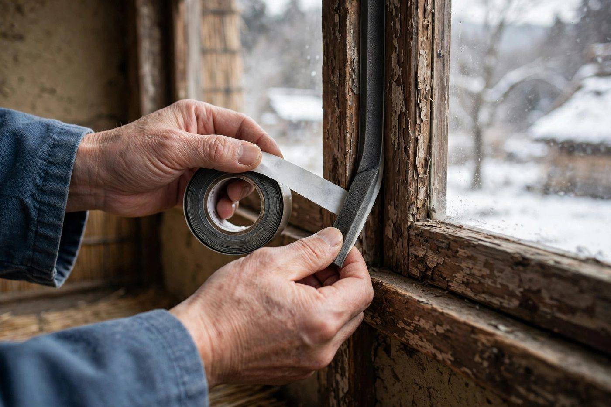
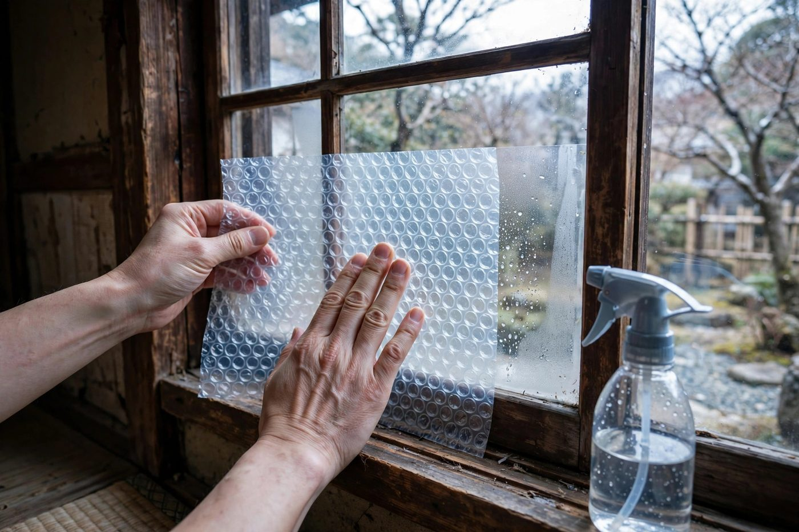
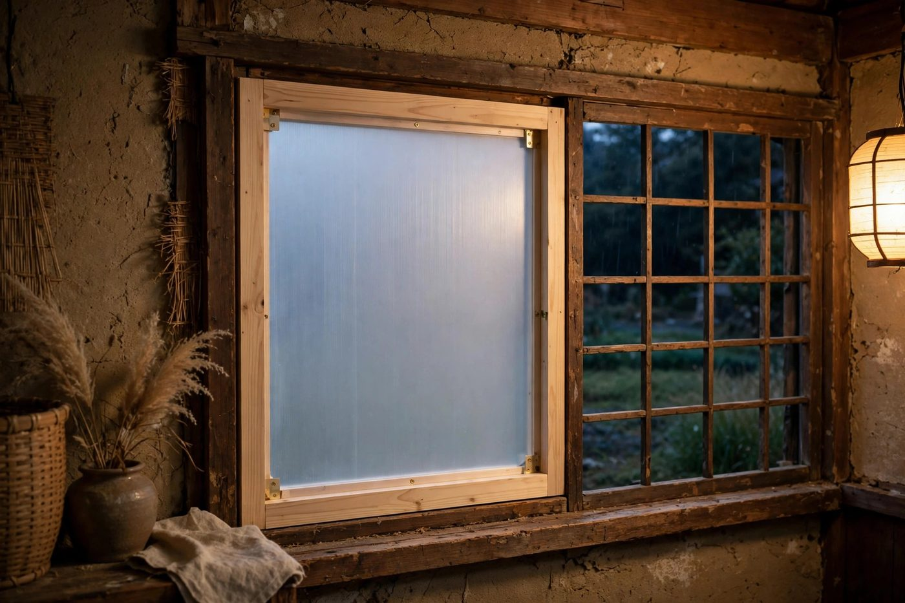
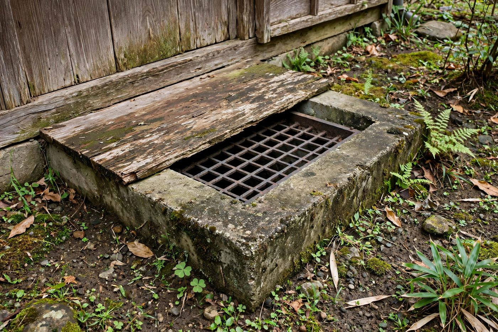

古民家の寒さ対策、まず窓から｜1窓だけ試して分かったこと

古民家の冬は寒い。ストーブをつけてもなかなか暖まらない、足元だけ冷える。原因を調べてみると、家全体の熱の出入りのうち窓まわりが占める割合は約5〜6割と圧倒的に大きいそうです。壁や床より先に、窓から手をつけるのが近道でした。
いきなり全部やらない。まず1窓だけ確かめる
最初にやったのは、お金のかからない確認です。ティッシュを細く裂いて窓の桟に近づけると、隙間風がある場所ではティッシュが揺れます。家中の窓を一気に工事する前に、まず一番使う部屋の1窓だけで対策を試して、効果を体感で確かめるのがおすすめです。効果が分かれば、残りの窓に広げる判断がしやすくなります。
段階別：窓まわりの寒さ対策
1. 隙間テープで隙間風を止める（一番安くて早い）
サッシや建具の隙間に隙間テープを貼るだけ。費用も安く、効果がすぐ分かります。古い木製建具は反りで隙間が大きめなので、厚みのあるタイプが合いました。

2. 断熱シート・プチプチを窓ガラスに
窓ガラスに貼る断熱シートは、冷気の伝わりを和らげます。結露対策にもなりますが、貼り方を失敗すると気泡が目立つので、霧吹きで水を吹いてから貼るのがコツです。

3. 簡易内窓（中空ポリカ＋フレーム）
一番効果を感じたのは内窓です。既存の窓の内側にもう一枚窓を作ると空気の層ができて、冷気と結露が大きく減ります。キットを使えばDIYでも設置できます。費用は上がりますが、1窓で試して効果を確認してから広げるのが無駄がありません。

窓対策で使った・検討したアイテム
- 隙間テープ（厚手タイプ）
- 窓用断熱シート
- 簡易内窓キット（フレーム＋中空ポリカーボネート）
- 結露吸水テープ
同じ用途のものはAmazonでも探せます（PR）


番外編：服装の寒さ対策も効く
窓対策と並行して効くのが服装です。雪かきや屋外作業の防寒着・長靴・手袋は、スポーツ・アウトドア用品店の方が種類が多く、古民家まわりの作業にも使えるものが揃っています。
ついでに：基礎の通気口は「全部塞ぐ」はNG
冬の冷気対策で基礎の通気口を塞ぐ方法がありますが、全部塞ぐと床下の湿気がこもって家によくありません。うちでは折衷案として、北側や風が直接当たる側だけ塞ぎ、1〜2か所は開けたままにしています。春（3月）になったら全部開けに戻す、という運用です。

まとめ
- 古民家の寒さは窓まわりが約5〜6割。まず窓から
- いきなり全部やらず、1窓だけ試して効果を確かめる
- 隙間テープ→断熱シート→内窓の順に段階を上げる
- 基礎の通気口は一部だけ塞ぎ、春に全部開ける